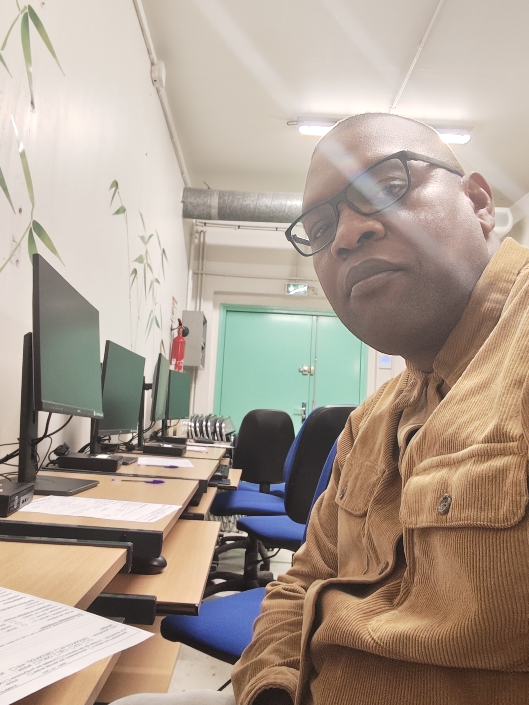

Développement web
HTML, CSS, JavaScript, Visual Studio Code, Git, GitHub et npm.

Disponible · Melun (77), France
Développement web · VBA & Excel · IA générative · Assistance informatique Windows
HTML, CSS, JavaScript, Visual Studio Code, Git, GitHub et npm.
Excel, VBA, UserForms, Word et PowerPoint.
DB Browser for SQLite, SQL et QGIS Desktop 3.44.14.
ChatGPT, Claude, Perplexity, Gemini, Qwen et NotebookLM.
Canva, CapCut, Suno et Google Flow.
Windows 11, paramètres système, Gestionnaire des tâches et PowerShell.
Site web narratif consacré à mon roman : univers, personnages, extraits et bande-annonce.
Découvrir le site →Projet de site web consacré à « Les aveux d’un pasteur ».
Découvrir le site → 🌦️Application web qui affiche les données météo et les températures de la journée.
Découvrir le projet → 🗓️Assistant de calcul d’heure de départ avec marge, transport, météo et trafic.
Projet en construction →Projet créatif en préparation autour de la musique, de l’intelligence artificielle et du design.
À venirMachines technologiques et équipement. Université technique nationale Donski, Rostov-sur-le-Don, Russie.
Qualification professionnelle dans le transport collectif de voyageurs.
GRETA · Carcassonne
IUT de Carcassonne
VOXIA · Formation en ligne
Acquis : HTML, CSS, JavaScript, Git, GitHub, Visual Studio Code, VBA & Excel, Windows 11, PowerShell et outils d’IA.
En progression : API, SQL, automatisation, applications web, projets pratiques et MapInfo SIG.